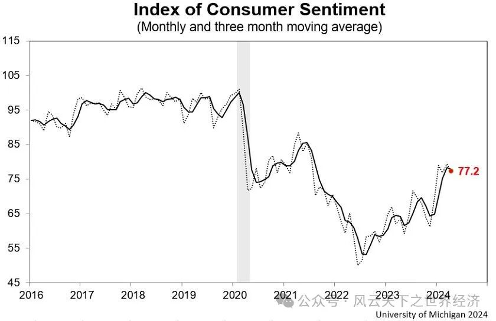

美国经济最大的问题是什么？如果在一年前问这个问题，毫无疑问，大多数美国人会认为是居高不下的通货膨胀问题。如果现在再问这个问题，答案或许会不一样。
对美国经济状况负有第一责任的美国人——乔·拜登正在努力告诉世界，美国经济健康的几乎没有问题。当然，现在的他必须这样做。4月初，美国现任总统拜登在接受NBC的“TODAY”栏目的访谈时称：“美国拥有世界上最好的经济。”
总统先生的这一观点遭到前总统先生的尖酸嘲讽。在此前佐治亚州的一次竞选集会上，特朗普对他的支持们喊道：“我们这个国家的经济正在崩溃，陷入一片废墟，供应链已经断裂，商店没有存货，快递也送不过来。”美国人民正生活在一片毫无生机的“商业废墟”上。
他们中至少有一个人在说谎，那么，关于美国经济的真相到底是什么？
经济数据支持乔·拜登
美国第一季度经济增长率仅为 1.6%，远低于此前的预期。这一数据是2022年第二季度以来最慢的最慢记录。尽管如此，但从历史标准来看仍然健康，因为第一季度的美国经济承接的是本世纪迄今为止最为繁荣的一年，经济增速高达2.5%。
尽管当前的通胀仍然高于2%的政策目标值，但是其增长的势头已大幅减缓；劳动力市场的表现失业率已连续 25 个月低于4%，是 50 多年来持续时间最长的一次；与其他主要发达经济体的对比，美国经济的优良表现足以睥睨全球。自 2019 年底以来，美国经济实际增长近 8%，是欧元区的两倍多，是日本的十倍，在同一时期，英国的经济几乎没有增长。
强劲的消费支持了美国经济的良好预期。3 月份的零售额（未扣除通胀因素）环比增长了 0.7%，比去年同期增长了4%。此前 2 月份的月度增长率为 0.9%。如果剔除掉拖后腿的汽车消费，零售额的月度环比增长达到了1.1%，与汽车消费相关的汽油销售额因汽油价格上涨而增长了2.1%，如若不计汽车和汽油销售，零售额的月度环比则高达1%。
降息的预计正在逐步消退。由于今年前三个月的通胀连续高于市场的预期，使得今年第二季度加息的传言就此落空。投资者开始对这一情势感到焦虑并出现躁动的情绪，随着而来的是股票大幅下跌，债券收益率上升，美国汇率飙升。在三月的通胀报告公布前，投资者认为 7 月前降息的可能性为 98%。然而，就在报告发布后，这一概率降至 50%。美联储主席鲍威尔的言论也进一步证实这一点：“我们需要有更大的信心，相信通胀率正在可持续地迈向2%，然后才适合放宽政策。最近的通胀数据显然没有给我们带来更大的信心，反而表明实现这种信心可能需要比预期更长的时间。”
那么通胀还会持续多久，这就需要关注造成3月份物价继续飙升的原因。当前的通胀具有典型的结构性分化特征，首先，能源价格反弹，这解释了总体通胀率反弹的原因。而以汽车为代表的耐用品则出现了2.1%的下跌，服务业价格则去去年同期上涨了5.3%。至于服务业价格上涨的原因，则要去劳动力市场寻找答案。
服务业往往是劳动密集型行业，劳动力市场紧张必然推高工资上涨，工资成本推动服务价格屡创新高。尽管4 月份新增就业岗位 17.5 万个，这是自 2023 年 10 月以来最缓慢的就业增长。但是，这并不能代表一种趋势，当前还没有迹象表明劳动力市场的紧张状况正在缓解。
总之，当前通货膨胀的情势仍然让美联储高度戒备，而价格的上涨主要是服务业驱动的，而服务业的价格高企则是劳动力市场紧张的反应。这一条因果传递链条意味着美国经济的增长潜力还未耗尽。
政策和运气使然
是什么因素促成了美国21世纪迄今最好的经济表现？得当的政策和上天的眷顾是两个最为重要的方面。
在两党政府中均担任过高官得经济学家乔希-戈特鲍姆（Josh Gotbaum）认为：“我们的财政刺激措施比其他任何国家都多，这也是美国从Covid-19大萧条中复苏得比其他任何国家都好的部分原因。”此言绝非虚妄，多项刺激经济法案所汇集起来的救济资金占到了GDP的26%，比其他发达国家的平均水平高出了一倍多。当然这样做的代价也异常惨重，此举在为经济提供缓冲，并确保了经济快速增长的同时，也直接推高了通货膨胀，其次是使得美国的预算赤字一路高企，2023年的基本赤字接近GDP的8%。但是事实证明，这些都是值得的。大量政府转移支付保证了消费者的购买欲望，使旺盛的需求得以维持。
在货币政策上，美联储始终如一的鹰派政策对通胀率保持了高度的压制，这是自卡特政府以来最长周期最高剂量的加息操作。但是由于刺激性政策加持，在过去两年，即使利率一再上升，但需求始终保持强劲。
从供给端来看，刺激性财政政策避免了企业通过大幅裁员来应对衰退，劳动力市场始终保持足够的韧性。尽管在今年2月份失业率略有上升，但在过去的两年中，该指标始终保持在4%的目标值以下。
不断增长的供应满足了强劲的需求。与2019年底相比，美国的工人数量增加了4%，这部分归功于劳动力参与率的提高，但更为重要的因素是移民人数的增加。拜登政府相对宽松的移民政策，使得新增劳动力大军中外国出生人口增加了440万。相对于美国现有的劳动力存量，这类人群的主体是高生产率的代表，是支持生产或服务活动不折不扣的生力军。作为一个移民社会，美国灵活的劳动力市场使经济更容易快速适应不断变化的世界。
Photo by Nick Fewings on Unsplash
在政策得力的情况下，好的运气也随之而来。当前的全球经济形式有越来越多的地缘政治元素，即便在某些领域，美国是地缘经济碎片化的始作俑者。但是，由于它在全球经济版图上的地位使其在地缘政治危机的应变方面具有独特的能力。例如，俄罗斯入侵乌克兰扰乱了全球能源和食品价格，但美国受到的伤害不如欧洲和日本等地区大，因为相对于这些地区，美国对俄罗斯的能源和食品依赖性不强。其广阔的国内市场具备优良的鼓励创新的土壤，这意味着它对外贸的依赖程度低于较小的富裕经济体。十年前俄罗斯与欧佩克等主要产油国达成的原油价格联盟使得石油价格一直维持在40美元以上的“舒适”区间，在客观上使得开采成本更高的页岩油变得有利可图，2010年代的页岩热潮使美国成为一个能源净出口国。地缘危机造成能源价格一路走高，美国实际上变成了收益者，而不像欧洲人那样饱受能源涨价之苦。
独特的债务结构也支撑了美国经济的韧性。其中，30年期固定利率抵押贷款起到了关键作用，使得美国家庭能够较少受到全球利率飙升的冲击。这种抵押贷款利率的长期稳定性是美国金融体系独有的，因此在后续利率上升的时候，为家庭提供了一种保护机制。穆迪首席经济学家马克-赞迪（Mark Zandi）认为：“银行系统承担了大量的利率风险，但在世界其他地方，他们把风险推给了家庭和企业。”
只有经济学家才相信数据，民众只相信感受

密歇根大学发布的消费者情绪指数近期走势
尽管数据强劲，但是许多美国人仍然对经济感到不乐观。2024年4月份的消费者情绪指数（Consumer Sentiment Index）显示，尽管较之2023年有所上升，但是该指数仍然徘徊在80以下的地位，远低于疫情前的100的水平。人们普遍感到整体经济形势与人们对经济的感受之间存在脱节。尽管通胀放缓，劳动力市场健康发展，失业率创历史新低，股票仍处于牛市，但消费者情绪仍低于大流行前的水平。
该指数由密歇根大学发布，与其他指标不同的是，它更关注消费者的情绪，而非统计数据。密歇根大学消费者调查部主任 Joanne Hsu说：“这是一个我们可以进行长期比较并掌握消费者态度脉搏的指标。鉴于消费支出占国内生产总值的三分之二以上，这一指标非常重要。”
该指标的计算依据包括：与一年前相比，您的财务状况是好还是坏？您认为一年后您的经济状况会更好吗？您认为国家未来五年的发展方向是什么？显然，这些问题带有强烈的主观倾向，但是不要忘了，经济行为不是经济学，也没有人会照着经济学教科书来消费。消费者情绪指数尽管看起来不像GDP、CPI那么科学，但是它更真实。
瑞银全球财富管理公司（UBS Global Wealth Management）首席经济学家保罗-多诺万（Paul Donovan）说：“人们并不倾向于从通货膨胀的角度思考问题，经济学家才会这样做。但经济学家并不正常，正常人会从价格水平的角度思考问题。”
尽管经济统计数据一再表明通货膨胀已经开始回落，但是物价的确在上涨，它只是涨的比之前慢一些而已，2%的目标核心通胀率也太过抽象，只要消费者感受到物价上涨，对经济的负面情绪就会主导他们的行为。
如果拜登在今年11月份的大选中败北，那么物价上涨，而非通货膨胀将是“压死骆驼”的那“最后一根稻草”。